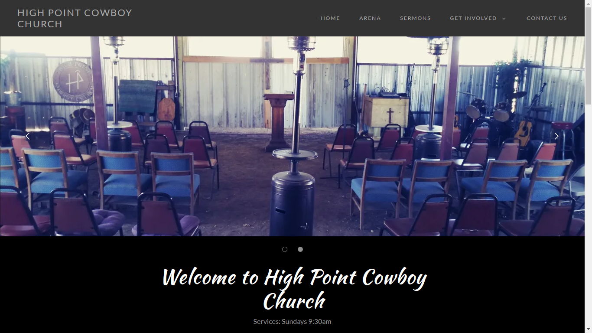
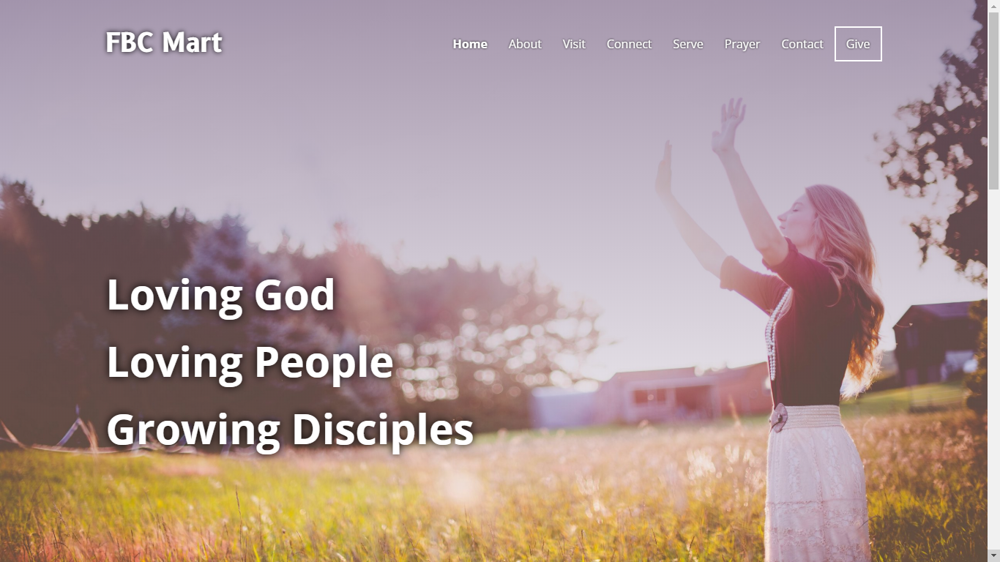
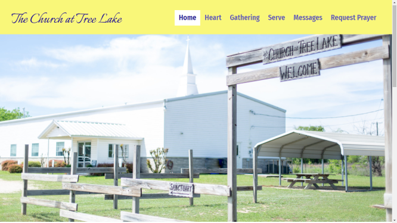

As a self taught developer, i have to find projects to build my experience. Below you'll find some websites i built as a volunteer for a local Tech group as well as one i built for a church directly. Further below you will find some small applications i built from challenge projects.
This was a learner project, it was the first site i built without using tutorials, but solely referred to my notes. I had to use HTML5, CSS3, JavaScript as well as OOP and form validation. I also included the coding projects ive done in this portfolio. I'm hoping this will get me my start in an actual Junior Dev position.
LIVE SITE VIEW CODE This was the first project i built which brought me into programming. My local church pastor asked if i could build him a new site for the church. The whole project was based on the pastors focus and approval. We met weekly so he could give me his ideas and wants for design and layout.
LIVE SITE This was a part of a volunteer project for a local tech group named Empower Waco. It was a group of volunteers getting together to help churches build an online presence to help through these times. This project was a WordPress build with custom configuration and theme changes, as well as useful techs like Slack and Trello for team working. The team built 2 Websites, both are listed here.
LIVE SITE This was a part of a volunteer project for a local tech group named Empower Waco. It was a group of volunteers getting together to help churches build an online presence to help through these times. This project was a WordPress build with custom configuration and theme changes, as well as useful techs like Slack and Trello for team working.
LIVE SITE